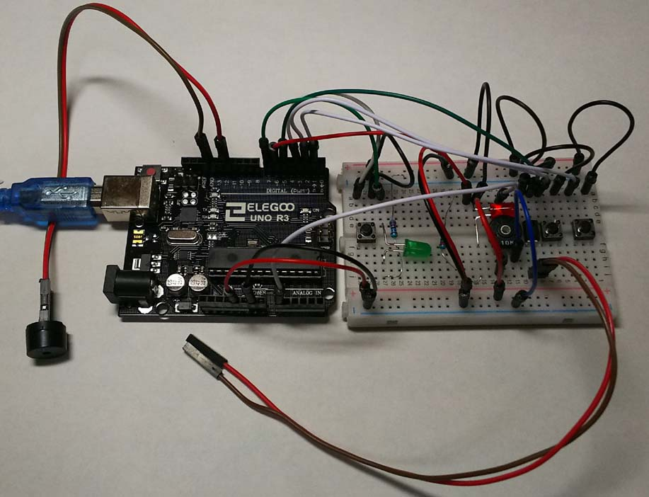

aarduino で CW Auto Keyer
arduino で CW Auto Keyerをつくってみました。
マルツ通販で4チャンネルメモリーキーヤーをすでに購入し、使っているのですが
arduino で、自分でできないものかと思い、やってみました。
無事動作したので、満足、チャンネルメモリーキーヤーの方で十分なので、これを使う事はないと思います。
------------------------------------------------------------------------------------------------------
// CW Auto Keyer JJ8XNP
int Hz = 600; //600Hzトーン
int SPD; //speed 短点のmS
int Keypin = 5; //送信機Key入力の間にフォトカプラを入れてある
int ledPinR = 6; //ブレッドボードの赤色LED
int ledPinG = 7; //ブレッドボードの緑色色LED
int Soundpin = 12; //圧電SP
int buttonApin = 3; //CQコール
int buttonLongpin = 1; //LT;長点送出ボタン、パドルの片方に
int buttonShortpin = 2; //ST;短点送出ボタン、パドルの片方に、パドルGNDはarduino本体GNDにつなぐ
const int VR_pin = A0; // analog pin connected to VR output Speed可変 10kΩ
void setup() {
pinMode(LED_BUILTIN, OUTPUT); //arduino本体のLED、pinナンバー13 LED_BUILTINは本体で定義済
pinMode(Keypin, OUTPUT); //Key Input用、 ブレッドボードの緑色LED
//digitalWrite(Keypin, LOW); //
pinMode(ledPinR, OUTPUT); //ブレッドボードの赤色LED
pinMode(ledPinG, OUTPUT); //ブレッドボードの緑色色LED
pinMode(buttonApin, INPUT_PULLUP); //7番pin if文開始ボタン押すとGND(LOW)になる
pinMode(buttonLongpin, INPUT_PULLUP); //6番pin LT;
pinMode(buttonShortpin, INPUT_PULLUP); //4番pin ST;
//delay(2000);
}
//以下、関数
void LT(){ digitalWrite(ledPinG, HIGH); digitalWrite(Keypin, HIGH); tone(Soundpin, Hz, 3*SPD); delay((3)*SPD); digitalWrite(ledPinG, LOW); digitalWrite(Keypin, LOW); delay((1+0)*SPD); }
void ST(){ digitalWrite(ledPinG, HIGH); digitalWrite(Keypin, HIGH); tone(Soundpin, Hz, 1*SPD); delay((1)*SPD); digitalWrite(ledPinG, LOW); digitalWrite(Keypin, LOW); delay((1+0)*SPD); }
void ET(){delay((1+1)*SPD);}
void A(){ST();LT();ET();}
void B(){LT();ST();ST();ST();ET();}
void C(){LT();ST();LT();ST();ET();}
/*void C(){tone(8, Hz, 3*SPD); delay((1+3)*SPD); tone(8, Hz, 1*SPD); delay((1+1)*SPD); tone(8, Hz, 3*SPD); delay((1+3)*SPD); tone(8, Hz, 1*SPD); delay((1+1)*SPD); delay((1+1)*SPD);}*/
void D(){LT();ST();ST();ET();}
void E(){ST();ET(); }
void FF(){ST();ST();LT();ST();ET();} //Fは他に使われている？
void G(){LT();ST();ST();ET(); }
void H(){ST();ST();ST();ST();ET();}
void I(){ST();ST();ET(); }
void J(){ST();LT();LT();LT();ET();}
void K(){LT();ST();LT();ET(); }
void L(){ST();LT();ST();ST();ET();}
void M(){LT();LT();ET();}
void N(){LT();ST();ET();}
void O(){LT();LT();LT();ET();}
void P(){ST();LT();LT();ST();ET();}
void Q(){LT();LT();ST();LT();ET();}
void R(){ST();LT();ST();ET();}
void S(){ST();ST();ST();ET();}
void T(){LT();ET();}
void U(){ST();ST();LT();ET();}
void V(){ST();ST();ST();LT();ET();}
void W(){ST();LT();LT();ET();}
void X(){LT();ST();ST();LT();ET();}
void Y(){LT();ST();LT();LT();ET();}
void Z(){LT();LT();ST();ST();ET();}
void Num0(){LT();LT();LT();LT();LT();ET();}
void Num1(){ST();LT();LT();LT();LT();ET();}
void Num2(){ST();ST();LT();LT();LT();ET();}
void Num3(){ST();ST();ST();LT();LT();ET();}
void Num4(){ST();ST();ST();ST();LT();ET();}
void Num5(){ST();ST();ST();ST();ST();ET();}
void Num6(){LT();ST();ST();ST();ST();ET();}
void Num7(){LT();LT();ST();ST();ST();ET();}
void Num8(){LT();LT();LT();ST();ST();ET();}
void Num9(){LT();LT();LT();LT();ST();ET();}
void space(){ delay(4*SPD);}
/*
bt;// = ar;// + va;// ^ kn;// [ BK;// ] HI;// ! Lkakko; //( Rkakko; //) Rkakukakko; //<
Lkakukakko; //> sharp; //# stringmark; //$ piriod; //. kamma; //, zyuuten; //: question; //?
ryakuhu; // ’*** mainas; //- syasen; // / inyouhu; // " 引用符 attomark; // @
teisei; // HH * 訂正 as; // AS
*/
void loop() {
SPD = analogRead(VR_pin)/5; // analog pin connected to VR output Speed可変 SPD = 100; //100;12WPM 60;20WPM
if (digitalRead(buttonLongpin) == LOW) { LT(); } //長点
if (digitalRead(buttonShortpin) == LOW) { ST(); } //短点
//CQマシン
if (digitalRead(buttonApin) == LOW) {
digitalWrite(ledPinR, HIGH); delay(200); digitalWrite(ledPinR, LOW);
digitalWrite(LED_BUILTIN, HIGH);
C(); Q(); space(); C(); Q(); space(); D(); E(); space(); J(); J(); Num8(); X(); N(); P(); space(); K();
digitalWrite(LED_BUILTIN, LOW); //arduino本体のLED、pinナンバー13
}
}
-----------------------------------------------------------------------------------------------------
